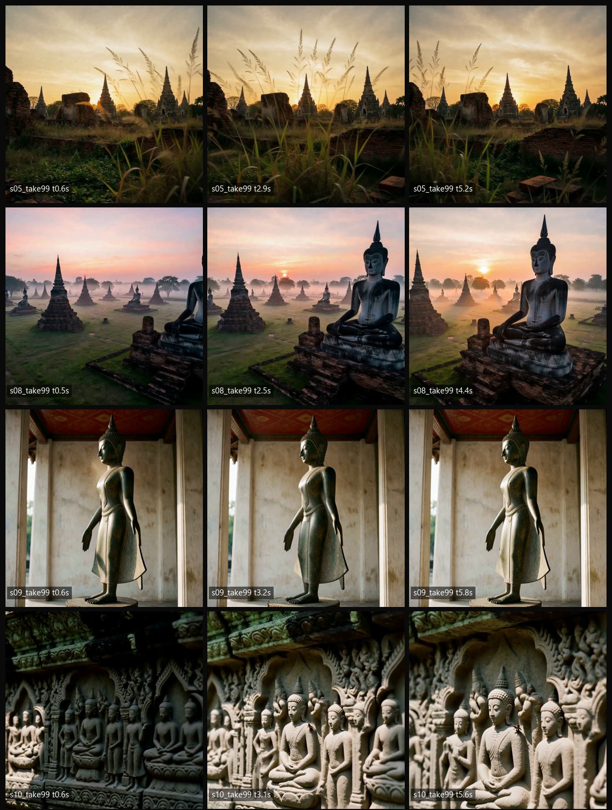

นายรังษิกร สิงห์ไธสง
//RUNGSIKORN SINGTHAISONG-MEAN
Industrial Engineer -X- Generative AI Specialist
สำเร็จการศึกษาวิศวกรรมศาสตรบัณฑิต (วศ.บ.) สาขาวิศวกรรมอุตสาหการ มหาวิทยาลัยบูรพา มีความเชี่ยวชาญทั้งหลักการปรับปรุงกระบวนการผลิต (Continuous Improvement / Kaizen การันตีด้วยรางวัลอันดับ 3 จาก Essilor) และเทคโนโลยีปัญญาประดิษฐ์ยุคใหม่: ออกแบบ Workflow สร้าง Text, Image, Video, Music บน ComfyUI พร้อมพัฒนา Clip Studio — ศูนย์ควบคุมการผลิตคลิป AI ที่ใช้ VS Code ในการ Automate งานจริง

คุณรังษิกร สิงห์ไธสง
ขอนแก่น, ประเทศไทย (พร้อมทำงาน)
Core Competencies
ทักษะ & ความเชี่ยวชาญ
การผสานองค์ความรู้ด้านวิศวกรรมการผลิตแบบดั้งเดิม เข้ากับเครื่องมือ Generative AI สมัยใหม่
Generative AI & Agents
การสร้างสรรค์สื่อครบวงจรและระบบอัตโนมัติ
-
ComfyUI Mastery: ออกแบบ Node Workflow สร้างครบทั้ง 4 มิติ (Text Prompting, Image Generation, Video Diffusion, AI Music Synthesis)
-
Clip Studio (พัฒนาเอง): ศูนย์ควบคุมการผลิตคลิป AI บน Obsidian — จัดการ episode/ช็อต, สั่งรัน image/voice/video เป็น batch, บังคับ QC Gate ระหว่างขั้น และสร้างรายงาน + คำสั่งแก้อัตโนมัติ
-
VS Code & Scripting: จัดการสภาพแวดล้อม พัฒนาโค้ดเบื้องต้นเพื่อเชื่อมโยง AI Tools
-
AI Automation: ลดระยะเวลาการทำงาน Creative & Operations ด้วย AI Pipelines

Industrial Engineering
การเพิ่มประสิทธิภาพและระบบคุณภาพโรงงาน
-
Continuous Improvement (CI) / Lean: วิเคราะห์ Process และคอขวดเพื่อลดความสูญเปล่า (Waste Elimination)
-
Kaizen / Poka-Yoke: คิดค้นไอเดียปรับปรุงหน้างาน (การันตีรางวัลอันดับ 3 จาก Essilor)
-
7 QC Tools & Statistical Analysis: ควบคุมคุณภาพและประมวลผลข้อมูลสถิติ
-
Line Balancing & Metrology: จัดสมดุลสายการผลิต และการสอบเทียบเครื่องมือวัดทางกล
Engineering Software & CAD
การออกแบบวิศวกรรมและซอฟต์แวร์สนับสนุน
-
CAD/CAM Tools: AutoCAD, SolidWorks, FeatureCAM (ออกแบบชิ้นงานและจำลองการผลิต)
-
Automation & Control: Basic PLC (Programmable Logic Controller)
-
Creative Editing: Adobe Photoshop (ตัดต่อ ตกแต่งภาพ Retouching)
-
Data & Productivity: Microsoft Excel (คำนวณสูตรและสถิติ), Word, PowerPoint
ComfyUI Multi-modal Capabilities
ทักษะการสร้างสรรค์คอนเทนต์ 4 เสาหลักด้วย Node-based Generative AI
High-fidelity Image Synthesis
ควบคุมการเรนเดอร์ภาพด้วย ComfyUI Node Graph: เชื่อมต่อ Checkpoint Models, VAE, IP-Adapter, LoRA และ ControlNet ทำให้สามารถ Generate ภาพที่มีองค์ประกอบและ Lighting ตามความต้องการได้อย่างแม่นยำสูง

Career & Track Record
ประสบการณ์ทำงาน & ผลงานจริง
การทำงานในสถานประกอบการอุตสาหกรรมชั้นนำ การฝึกงาน และรางวัลการันตีคุณภาพ
ผู้พัฒนาระบบผลิตคอนเทนต์ AI อัตโนมัติ (AI Content Pipeline)
ออกแบบและพัฒนาระบบผลิตวิดีโอ AI ครบวงจรตั้งแต่ต้นน้ำถึงปลายน้ำ:
- Clip Studio — สร้าง Obsidian plugin ศูนย์ควบคุมการผลิตคลิป AI เองทั้งหมด: จัดการ episode/ช็อต, สั่งรัน batch, บังคับ QC Gate, สร้างรายงาน + คำสั่งแก้อัตโนมัติ
- ComfyUI — วาง Node Workflow สร้างภาพ/วิดีโอ/เสียง 4 มิติ บน RTX 3060 (Z-Image/Krea, Minimax H3 lip-sync)
- Hermes + AI Agent — เชื่อม LINE/Telegram เข้ากับ agent, ตั้ง cron งานอัตโนมัติ, ผ่าน MCP เชื่อม tools ภายนอก
- OpenCode · Ollama · Miyo · Obsidian — routing โมเดล LLM ตามงาน, LLM บนเครื่อง, ค้นหาคลังความรู้ และคลังเอกสารกลาง
ผู้รับเหมาดิน งานขุด ขน ถม
บ่อดินแลกน้ำมหาสารคาม:
- คิดต้นทุนรับเหมา เสนอราคา
- วัดค่าคอนทัวร์ วัดปริมาณดิน ทำแบบส่งงาน (ประยุกต์ใช้ความรู้ด้านวิศวกรรม & งานสำรวจ)
เจ้าหน้าที่ห้องปฏิบัติการ ระดับ 1 (Laboratory Officer Level 1)
ปฏิบัติงานในห้องปฏิบัติการสอบเทียบมาตรฐานอุตสาหกรรม:
- งานปฏิบัติการสอบเทียบเครื่องมือวัดทางด้าน Mechanical (ทางกล) เพื่อให้เป็นไปตามมาตรฐานการสอบเทียบ
- งานบริการลูกค้า: รับ-ส่งงานสอบเทียบ ประสานงานและจัดทำรายงานผลการสอบเทียบให้กับลูกค้าอุตสาหกรรม
รางวัล Kaizen 8G : นวัตกรรมป้องกันการเติมซองผิด
คิดค้นและนำเสนอข้อเสนอแนะในการปรับปรุงกระบวนการทำงานจริงในหัวข้อ "ป้องกันการเติมซองผิด" ผ่านการประยุกต์ใช้หลักการ Poka-Yoke / Kaizen เพื่อลดข้อผิดพลาดในสายการผลิต ช่วยลดของเสียและเพิ่มความถูกต้องของผลิตภัณฑ์
นักศึกษาฝึกงาน ฝ่าย Continuous Improvement (CI)
ฝึกงานในส่วนงานพัฒนาและปรับปรุงกระบวนการอย่างต่อเนื่อง:
- ศึกษาและจัดทำ Line Balancing เพื่อลด Cycle Time ในสายการผลิตเลนส์สายตาระดับโลก
- ใช้เครื่องมือ 7 QC Tools และสถิติวิศวกรรมในการวิเคราะห์หาสาเหตุของ Defect ในโรงงาน
- จัดทำกิจกรรม Kaizen 8G และสื่อสารเพื่อสร้างวัฒนธรรม Continuous Improvement
วิศวกรรมศาสตรบัณฑิต (วศ.บ.) สาขาวิศวกรรมอุตสาหการ
ศึกษารวม 151 หน่วยกิต ครอบคลุม: การเขียนโปรแกรมคอมพิวเตอร์สำหรับวิศวกรรม (เกรด B), การวิจัยการดำเนินงาน (Operation Research เกรด A), การจัดการทางวิศวกรรม (เกรด A), กรรมวิธีการผลิตและเขียนแบบการผลิต (เกรด A), สถิติวิศวกรรม (เกรด B+), การออกแบบผังโรงงาน และระบบสนับสนุนการตัดสินใจ
Official Documents
เอกสารอ้างอิงและใบรับรอง
ข้อมูลและเอกสารทางการที่สามารถตรวจสอบและยืนยันประวัติการทำงานได้
เกียรติบัตร Kaizen 8G
หัวข้อ "ป้องกันการเติมซองผิด" จาก Essilor Optical Laboratory
บริษัท บูรพา เมโทรโลยี ซิสเต็ม
ตำแหน่ง เจ้าหน้าที่ห้องปฏิบัติการ ระดับ 1 ด้าน Mechanical
บริษัท เอสซีลอร์ ออพติคอล
ฝ่าย Continuous Improvement (CI) นิคมฯ อมตะนคร
หนังสือรับรองวุฒิการศึกษา
วิศวกรรมศาสตรบัณฑิต สาขาวิศวกรรมอุตสาหการ
ภาพการทำงานรับเหมา
บ่อดิน อ.เมืองสารคาม จ.มหาสารคาม
พร้อมร่วมงานสร้างสรรค์นวัตกรรมใหม่
ต้องการวิศวกรที่มีความเข้าใจทั้งกระบวนการทำงานแบบ Lean/CI และทักษะ Generative AI ยุคใหม่ เพื่อเพิ่มผลผลิตให้กับองค์กร ติดต่อผมได้ทันทีครับ
สรุปโปรไฟล์สำหรับ HR / ผู้ว่าจ้าง
ไฟล์ PDF 1 หน้า A4 · กดปุ่มขวาล่างในหน้า PDF เพื่อบันทึกลงเครื่อง หรือกด "พิมพ์หน้านี้เป็น PDF" ด้านล่างเพื่อพิมพ์จากเว็บไซต์